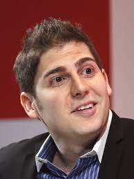

Investidor-anjo e empreendedor da Internet
Eduardo Saverin é bilionário brasileiro conhecido por ser um dos fundadores do Facebook, junto com Mark Zuckerberg e seus colegas Chris Hughes e Dustin Moskovitz, todos alunos da Universidade de Harvard. Sua fortuna impressiona Conforme o ranking de bilionários da revista Forbes 2022, Eduardo Saverin é a 185ª pessoa mais rica do mundo e 2ª do Brasil, com uma fortuna estimada de R$ 52,8 bilhões (2022). Eduardo Saverin também é sócio da B Capital Group, empresa fruto da parceria entre ele e o empresário Raj Ganguly.
Eduardo Saverin nasceu no dia 19 de março de 1982, na cidade de São Paulo. Filho caçula do casal Roberto Saverin e Paula Saverin. Em 1992, com apenas 11 anos, Eduardo e seus dois irmãos mais velhos, uma irmã e um irmão, se mudaram para Miami com os pais. Era um sonho de Roberto Saverin, que viu na crise política que o Brasil passava um motivo a mais para se mudar. O bilionário brasileiro sempre teve boa condição financeira, seu avô, Eugênio Saverin, fundou a fábrica de roupas infantis Tip Top, que trazia ao mercado nacional os primeiros macacões para criança. Eduardo Saverin estudou parte do 1° grau e concluiu o 2° grau na escola Gulliver Preparatory School, em Miami.Após se formar no ensino médio, ingressou no curso de economia da Universidade de Harvard. Em seu período de faculdade, Eduardo Saverin se tornou presidente da Associação de Investimentos de Harvard.Aqui está uma curiosidade incrível: O fato mais notório desse período foi uma ação na qual Eduardo se aproveitou de brechas em regulamentos sobre insider trading do Brasil e conseguiu lucrar 300 mil dólares através de investimentos na área de petróleo.
